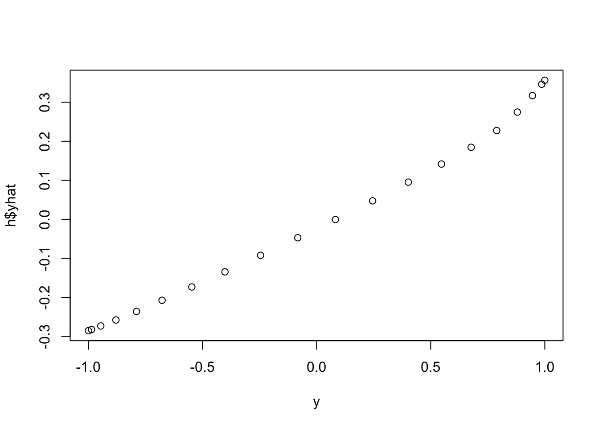
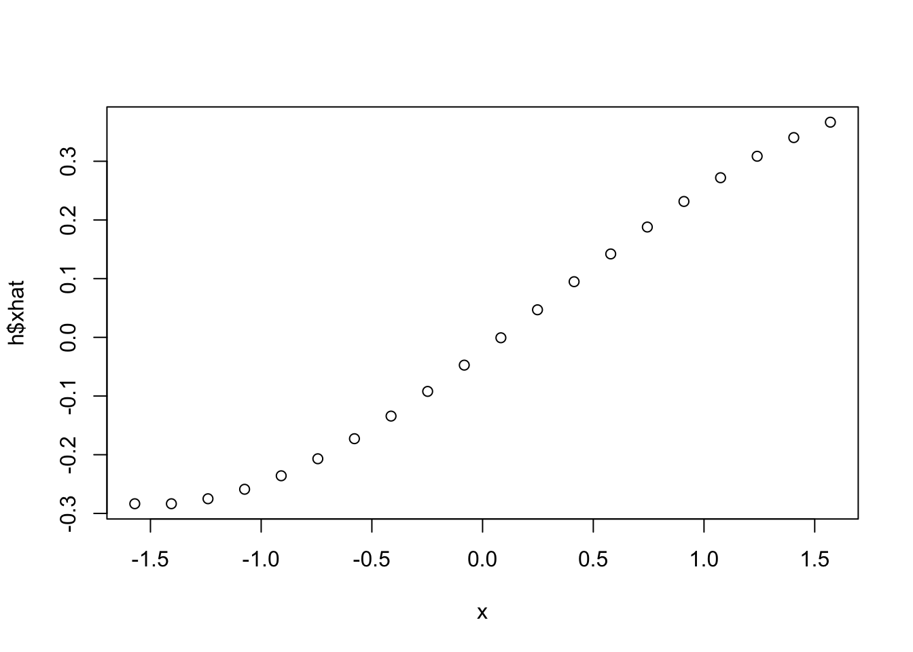
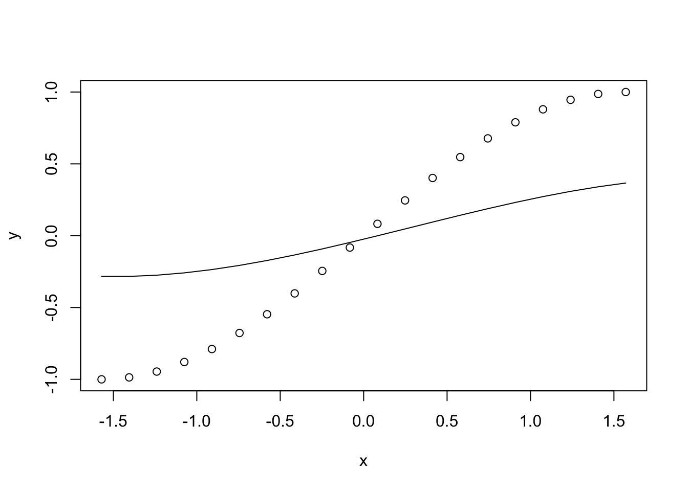
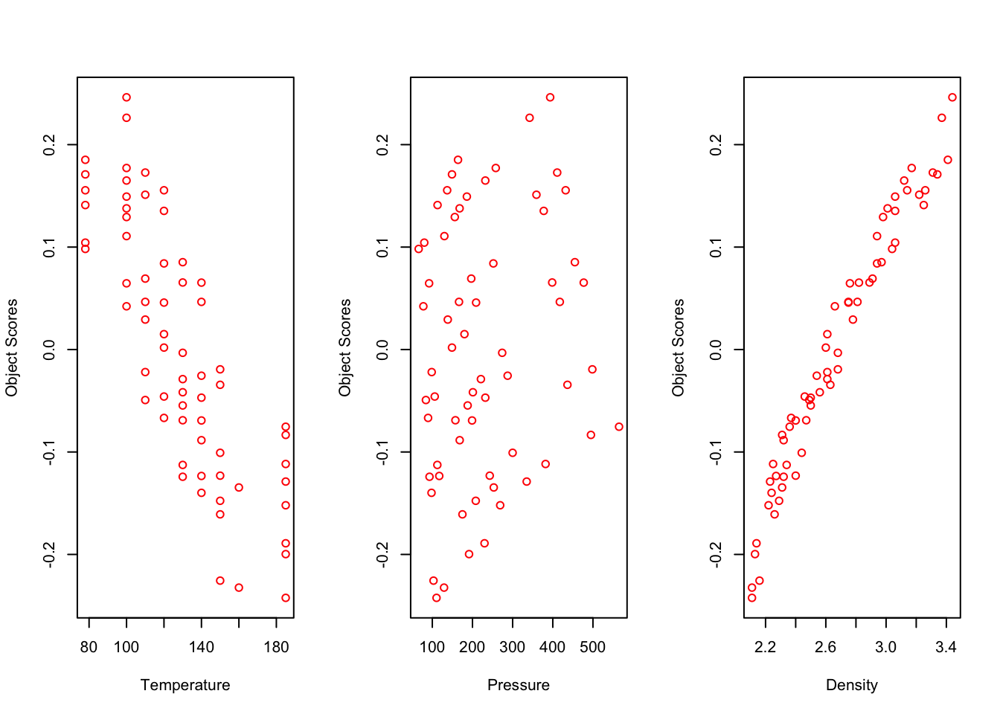
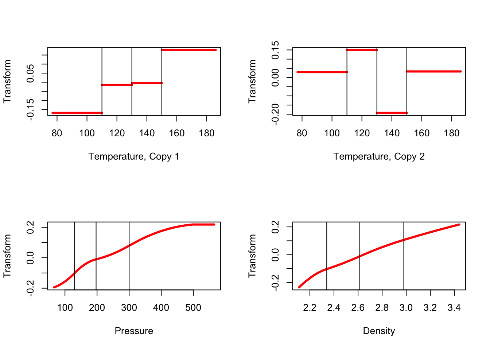

10 Multiple Regression and morals()
If the second block only contains a single copy of a single variable then we choose transformations that maximize the multiple correlation of that variable and the variables in the first block.
10.1 Equations
10.2 Examples
10.2.1 Polynomial Regression
x <- center(as.matrix (seq (0, pi, length = 20)))
y <- center(as.matrix (sin (x)))
h<- morals (x, y, xknots = knotsE(x), xdegrees = 3, xordinal = TRUE)
plot(y, h$yhat)
plot(x, h$xhat)
plot (x, y)
lines (x, h$ypred)
10.2.2 Gases with Convertible Components
We analyze a regression example, using data from Neumann, previously used by Willard Gibbs, and analyzed with regression in a still quite readable article by Wilson (1926). Wilson’s analysis was discussed and modified using splines in Gifi (1990) (pages 370-376). In the regression analysis in this section we use two copies of temperature, with spline degree zero, and the first copy ordinal. For pressure and the dependent variable density we use a single ordinal copy with spline degree two.
data (neumann, package = "homals")
xneumann <- neumann[, 1:2]
yneumann <- neumann[, 3, drop = FALSE]
xdegrees <- c(0,2)h <- morals (xneumann, yneumann, xdegrees = c(0,2), xcopies = c(2,1))In 58 iterations we find minimum loss 0.026805848, corresponding with a multiple correlation of 0.8956511807. The object scores are in figure 21 plotted against the original variables (not the transformed variables), and the transformation plots in are figure 22.

